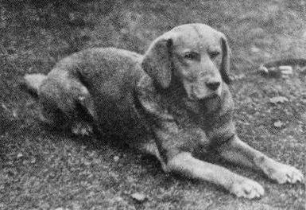

The Labrador breed dates back to at least the 1830s. The breed was created with the St. John's Water Dogs from Newfoundland and with the British hunting dogs. Colonel Peter Hawker describes the first Labrador as being not bigger than an English Pointer, more often black than other colors, had a long head and nose, and had a deep chest, fine legs, and short and smooth coat, and did not carry its tail as highly as the Newfoundland.

The first yellow Labrador on record was born in 1899. He was known as Ben of Hyde and was born in the kennels of Major C.J. Radclyffe. The breed was recognised by the Kennel Club in 1903. The first American Kennel Club (AKC) registration was in 1917. The chocolate (originally known as the Liver) Labrador emerged in the late 1800s. There were chocolate colored puppies documented at the Buccleuch kennels in 1892.
